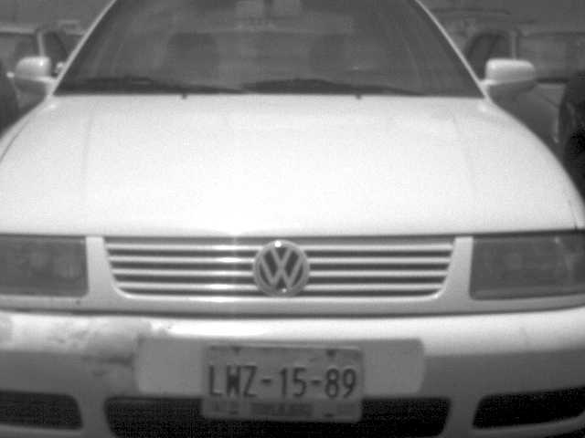
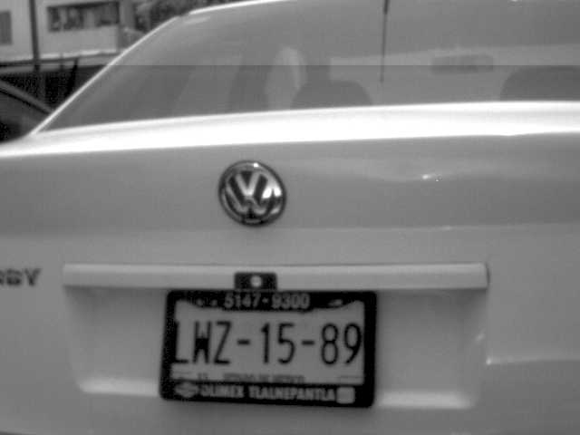

Expediente de la Infracción
Infracciones
Expediente
Folio: 01111914132
Fundamentación: 12 III ----- ----- POR ESTACIONARSE EN LAS VÍAS PÚBLICAS EN DOBLE O MÁS FILAS Y EN BATERÍA SALVO QUE EL SEÑALAMIENTO LO PERMITA.
Regresar


Anterior
Siguiente